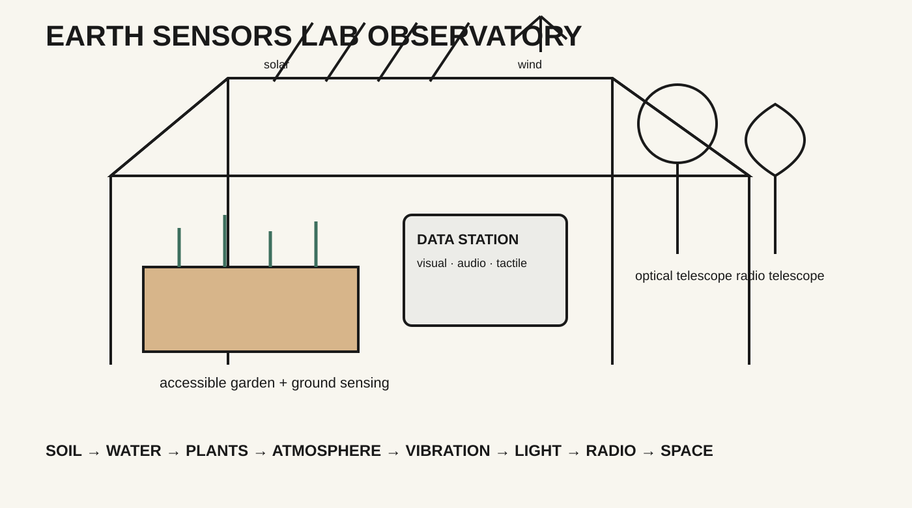

Plants + living systems
What changes as a plant grows? Combine careful looking with plant-health or environmental sensing. Decide what a camera can show and what it cannot.
Welcome to a living learning observatory: people, plants, instruments, energy, and data in one shared system. Students choose a question, follow the connections, and make something that helps others observe and understand.
Start with what catches your attention. A plant, a sensor, a rain barrel, the solar panels, a weather station, or a telescope can become the beginning of a question. No single instrument tells the whole story.

Follow one relationship through the observatory: sunlight to stored power; rainwater to soil and plant health; a sensor to a reading; a reading to a map, sound, or description; or a community question to a new instrument idea.
NOTICE → ASK → TRACE A CONNECTION → MAKE OR MEASURE → REPRESENT → SHARE → REVISE
Small teams can start in different places, then bring their observations together. These are example directions, not preassigned tracks.
What changes as a plant grows? Combine careful looking with plant-health or environmental sensing. Decide what a camera can show and what it cannot.
How do temperature, humidity, light, wind, or air quality vary around a site? Compare readings with place-based observations.
Where does energy come from, how is it stored, and what does it support? Trace rainwater through collection, storage, and irrigation.
What can vibration or sound reveal about a place? Explore a signal and make a text, visual, tactile, or sonic way to interpret it.
How do optical and radio instruments observe in different ways? Connect a local observation to a question about Earth and the wider universe.
How can students inspect, change, document, and explain a tool? Build an open-source prototype or a clear interface for its evidence.
Choose a connection in the illustration. Find out what it does, what information it produces, who can use that information, and what you would change or add.
Students bring different experience and work together as co-investigators. Each week connects inquiry, creative technology, accessibility, and making.
Explore the observatory concept. Share interests, access needs, and questions worth investigating.
Select a system connection. Map the people, materials, signals, data, and unanswered questions.
Make or adapt an instrument, interface, model, or observation method. Test it with peers.
Collect or examine evidence. Record how it was produced and what might affect it.
Represent what you learned in accessible forms. Revise after feedback from others.
Present a working prototype or investigation and name the next question for the observatory.
Students can speak, write, draw, sign, use assistive technology, work with a partner, or observe quietly before joining. Digital materials should work with keyboard and screen-reader navigation. Maps, graphs, images, and sound should have clear text equivalents. Students can choose meaningful roles without being required to use a camera or perform in front of the group.
These principles connect the sample to Earth Sensors Lab’s accessibility baseline and Kemi’s Accessible by Design practice. The project content is a proposal for discussion, not a confirmed course or partnership.